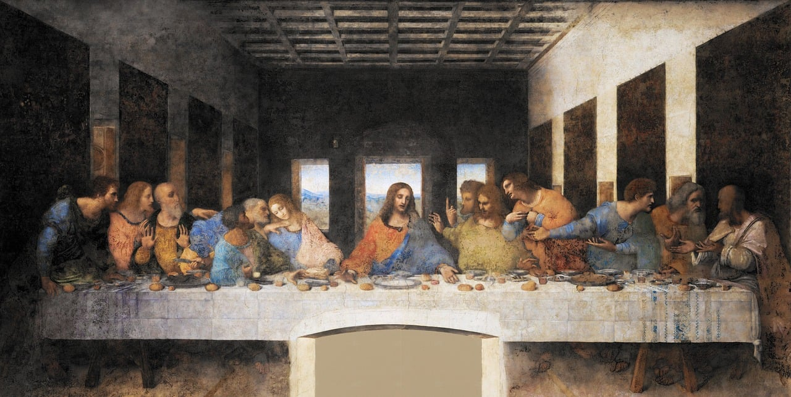

Milão
Capital mundial da moda e design, famosa também pela sua rica vida cultural e histórica.
Descrição
Milão é uma cidade dinâmica e moderna, conhecida como a capital mundial da moda e do design. Além disso, possui uma forte cena artística e cultural. Não deixe de visitar a Catedral de Milão, a Galeria Vittorio Emanuele II, e ver a obra-prima de Da Vinci, "A Última Ceia".
Pontos Turísticos de Milão
-

Catedral de Milão: Uma das maiores catedrais góticas do mundo, localizada no coração da cidade.
-
Galeria Vittorio Emanuele II: Um elegante centro comercial coberto, com lojas de luxo e restaurantes famosos.
-

A Última Ceia: Obra-prima de Leonardo da Vinci, localizada no convento de Santa Maria delle Grazie.
-
Castelo Sforzesco: Um castelo medieval com museus e galerias de arte, localizado em um grande parque no centro de Milão.
Comidas Típicas de Milão
-

Risotto alla Milanese: Arroz cremoso com açafrão, um prato típico de Milão.
-

Cotoletta alla Milanese: Costeleta empanada e frita, típica da culinária milanesa.